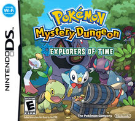
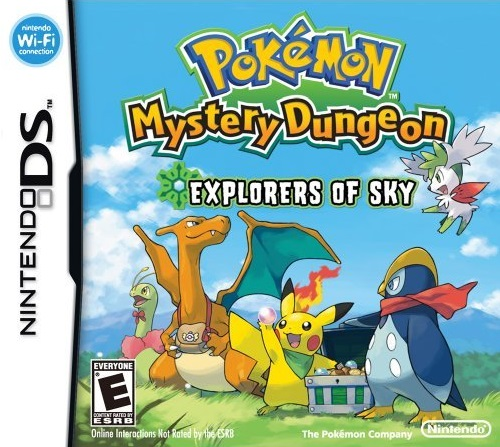

Blue Rescue Team and Red Rescue Team |
Pokémon Mystery Dungeon: Blue Rescue Team and Pokémon Mystery Dungeon: Red Rescue Team are a matched pair of Pokémon games for the Nintendo DS and Game Boy Advance, respectively. These two games were developed by Chunsoft, published by The Pokémon Company, and distributed by Nintendo. Red Rescue Team was the last Pokémon-themed video game to be released on the Game Boy Advance. The two versions are mostly identical, with Blue Rescue Team taking advantage of the dual-screen features and increased graphical and sound capabilities of the Nintendo DS. The game has six Pokémon exclusive to each version. |
 |
|---|---|---|
Explorers of Time and Explorers of Darkness |
Pokémon Mystery Dungeon: Explorers of Time[a] and Pokémon Mystery Dungeon: Explorers of Darkness[b] are a matched pair of Pokémon games for the Nintendo DS. The two games were released in Japan on September 13, 2007, and were released in North America on April 20, 2008.[1] They were released in Europe on July 4, 2008.[2] A third version, Pokémon Mystery Dungeon: Explorers of Sky,[c] was released in 2009.
|
 |
Explorers of sky |
Pokémon Mystery Dungeon: Explorers of Sky (ポ ケ モ ン 不 思議 の ダ ン ジ ョ ン 空 の 探 検 隊 Pokémon Fushigi no Danjon Sora no Tankentai?), Known in Spain as Pokémon Mysterious World: Explorers of the Sky, is a video game from the Pokémon Mystery Dungeon series, spin- offs of the Pokémon RPG games, released for Nintendo DS. It went on the market in Japan on April 18, 2009, later in the United States went on sale on October 12 of that year, while in Australia it was launched on November 12, 2009 and in Europe on November 20.
|
 |